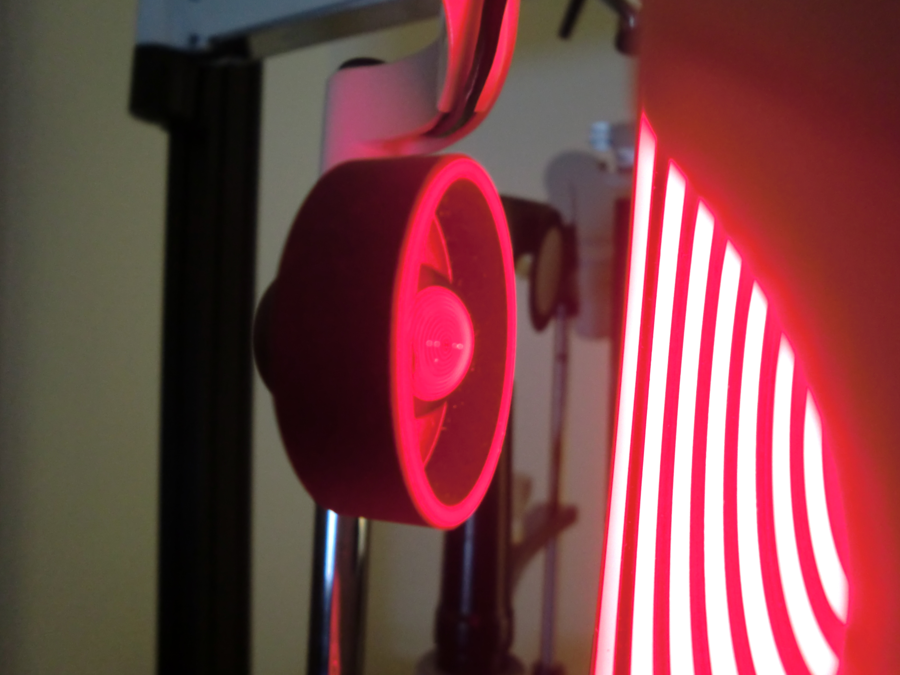

¿Qué es la Ortoqueratología?
Es un procedimiento no-quirúrgico revolucionario que elimina la necesidad de utilizar lentes y los lentes de contacto diurnos. Este procedimiento mejora la visión al delicadamente cambiar la forma de tu ojo MIENTRAS DUERMES usando unos moldes especialmente diseñados para este tratamiento. Solo debes de ponerte estos a la hora de dormir, y cuando despiertes tendrás una visión clara y aguda durante tus horas despierto.
Este es un tratamiento efectivo y seguro que puede corregir problemas de miopía (no ver bien de lejos), hipermetropía (no ver bien de cerca), astigmatismo y la presbicia (visión cercana borrosa). Es una gran alternativa a la cirugía LASIK.
¿Cómo funciona?
Para poder llevar a cabo este tratamiento, la superficie de tus ojos es esquematizada, como un mapa, usando un instrumento de alta tecnología conocido como topógrafo. Este instrumento permite crear lentes de contacto personalizados para tus ojos. Los lentes Orto-K están hechos de un material de alta oxigenación y con materiales específicamente hechos para que tus ojos respiren durante la noche y se mantengan saludables.
Orto-K es un procedimiento sumamente seguro y reversible. Fue aprobado por la FDA en el 2002. Sin embargo, como con todos los lentes de contacto existe un pequeño riesgo que se reduce al adoptar un régimen de limpieza cuidadoso, utilizando los lentes de contacto con las indicaciones pertinentes y seguimiento del tratamiento; típicamente una infección leve que puede ser remediada con antibióticos en forma de gotas. El riesgo es altamente reducido al adoptar un régimen de limpieza cuidadoso y al utilizar los lentes de la manera instruida por su doctor, al igual que manteniendo sus visitas de progreso necesarias.
Los resultados son sorprendentes por lo rápido que se producen. En tan solo 20 minutos de porte de las lentes con los ojos cerrados, se puede conseguir reducir la miopía en unas 0.75 dioptrías. Un paciente de 2 dioptrías de miopía estará viendo perfectamente tras 3 ó 4 noches de uso, y en general, todos los pacientes obtienen su mejor visión después de algunos días.
